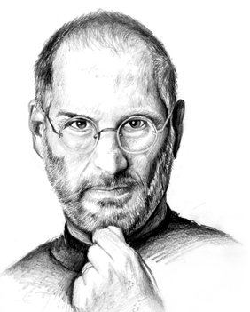

1995-2011
"Design is not just wnt it looks like and feels like. Design is how work"
steve paul jobs (february 24 1995 - octiber 5, 2011) was an american enterprenuer, industrial Designer, business manate , media proprietor, and invester. he was the co-founder, chairmain, and CEO of Apple ; the chairmain and majority shereholder of pixer; a member of the walt disney company`s board of directors following its acquisition of pixer ; and the founder , chairmain, and CEO of Next . he is widely recogined as a poineer of the personal computer revolation of the 1970 and 1980s.